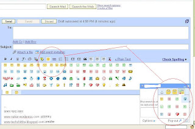

साथ ही जीचैट में नये स्माईली भी जोड़े गये हैं.. चित्र देखिये। है ना मजेदार!!
चित्र बड़ा करने के लिये उस पर क्लिक करें

आप सब के लिये दीपावली मंगलमय हो.... दीपावली की हार्दिक शुभकामनायें।
आप सब के लिये दीपावली मंगलमय हो.... दीपावली की हार्दिक शुभकामनायें।THE CONVERSATION, PRESERVED
Read-only. Names and wording belong to the original contributors.